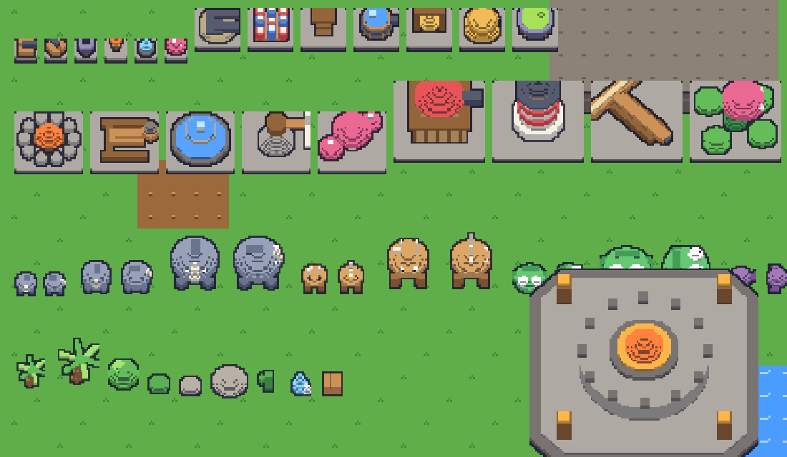
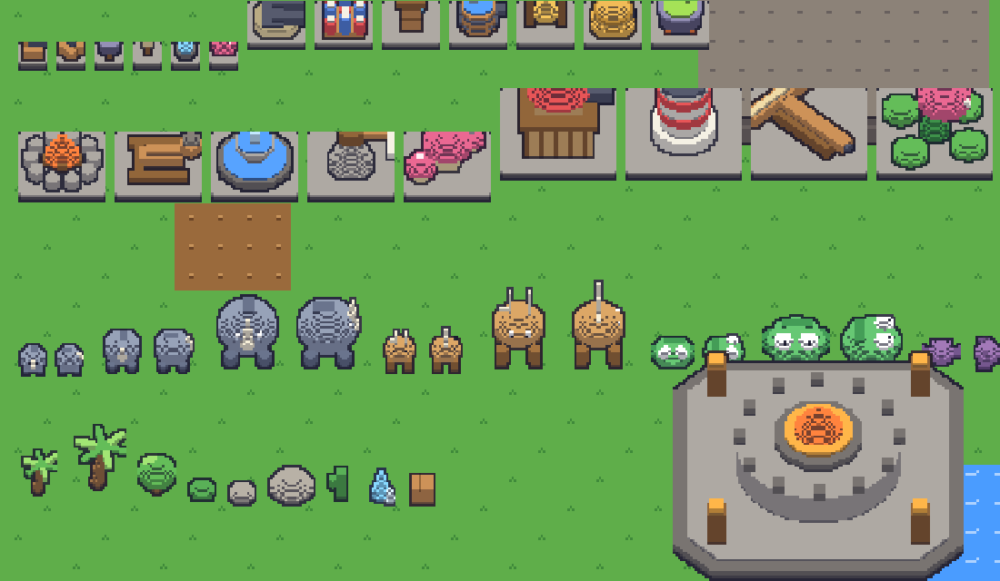
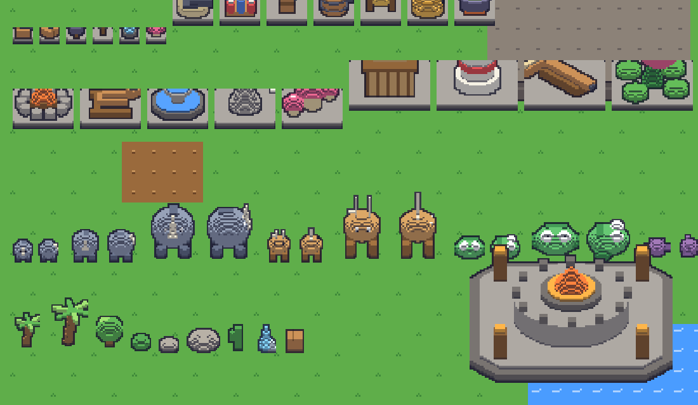

The same models under three cameras (VIEWS in game/voxelArt.ts): how much of a front you see is the main choice, then outline weight and palette. The game render above uses quarter.

Steep — mostly tops, short fronts. Closest to today's overhead read; the safest for a tower-defense board.

Quarter — tops and fronts equal. The reference's look (My Heroes / Stardew); what the game render uses.

Low — tall fronts, foreshortened tops. Reads most like a side-on RPG; cliffs and buildings get big faces, but a dense board hides more behind them.